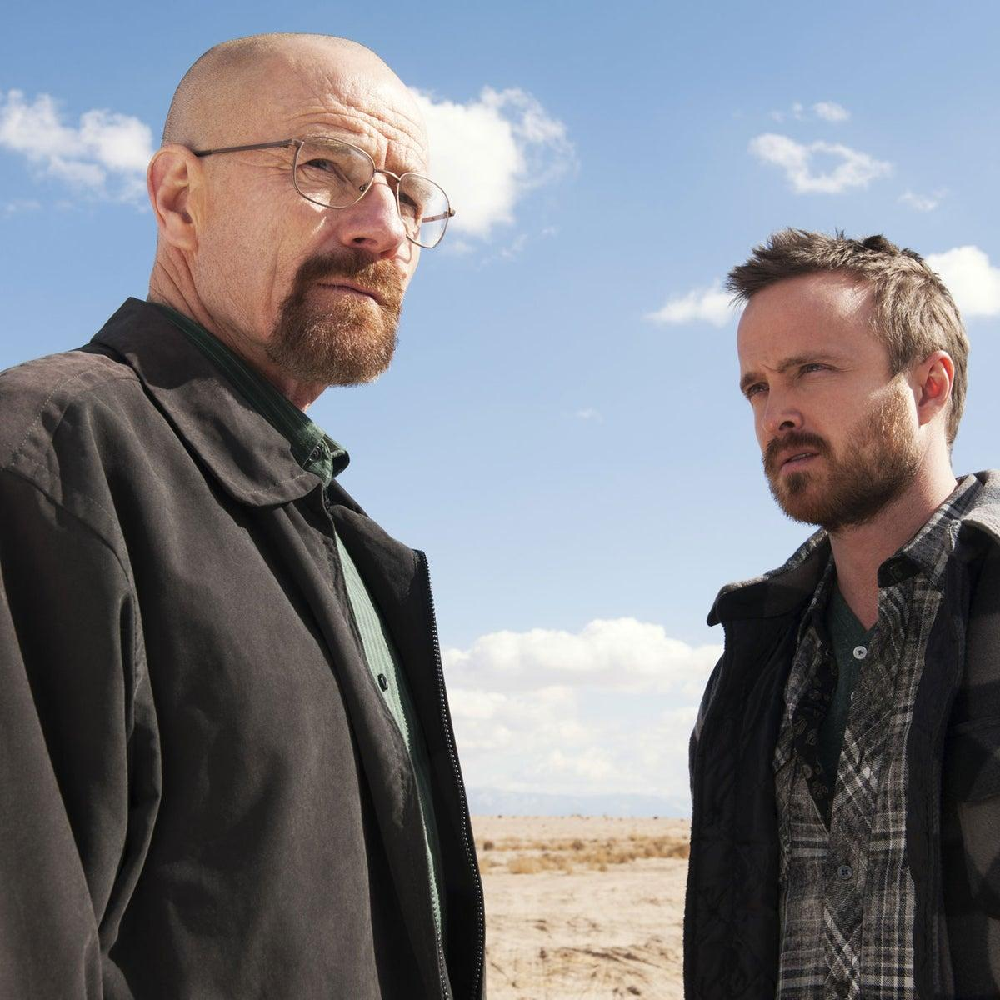

Historia de Breaking Bad
Breaking Bad es una serie dramatica estadounidense creada por Vince Gilligan y estrenada en 2008. La historia transcurre principalmente en Albuquerque, Nuevo Mexico, y sigue la transformacion de Walter White, un profesor de quimica cuya vida cambia por completo despues de recibir un diagnostico de cancer de pulmon.
Preocupado por la situacion economica de su familia y por el futuro de su esposa Skyler y su hijo Walter Jr., Walter toma una decision completamente inesperada: utilizar sus conocimientos de quimica para fabricar metanfetamina. Para llevar adelante su plan, se asocia con Jesse Pinkman, un antiguo alumno que ya conoce el mundo de las drogas.
Al principio, Walter considera que sus acciones son una forma de conseguir dinero para proteger a su familia. Sin embargo, el negocio comienza a crecer y ambos se enfrentan a situaciones cada vez mas peligrosas. En el camino aparecen narcotraficantes, organizaciones criminales y personas que ponen en riesgo sus vidas.
Con el paso del tiempo, Walter adopta el nombre de Heisenberg y empieza a mostrar una personalidad diferente. Su ambicion, su orgullo y su deseo de controlar las situaciones afectan sus relaciones personales y lo alejan cada vez mas de la vida que tenia antes.
Mientras tanto, Hank Shrader, agente de la DEA y cuñado de Walter, participa en una investigacion sobre el narcotrafico sin imaginar inicialmente lo cerca que esta del responsable. Otros personajes, como Saul Goodman, Mike Ehrmantraut y Gustavo Fring, tambien tienen un papel fundamental en el desarrollo de los acontecimientos.
A lo largo de sus cinco temporadas, Breaking Bad explora temas como la familia, la moral, la ambicion, las consecuencias de las decisiones y los limites que una persona esta dispuesta a cruzar. La serie muestra como una decision puede desencadenar una transformacion que termina afectando a todos los que rodean al protagonista.

Walter White y Jesse Pinkman: una sociedad que cambiara sus vidas para siempre.